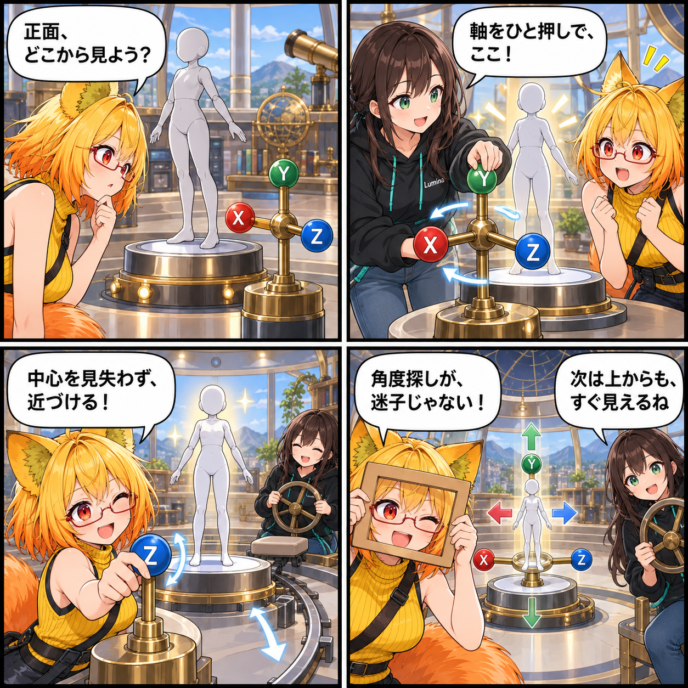

2026.09.24 / Development Log
見たい角度へ、ひと押しで向かう日
アバターを確認するとき、「正面に戻る」「上から見たい」と思うたびにカメラを動かすのは小さな手間になります。今回はデスクトップ表示へScene Gizmoを加え、見たい軸の視点へすぐ向かえるようにしました。
記事種別はdevelopment。集計期間は2026-09-23 03:00:00 JST〜2026-09-24 02:59:59 JST。参照ブランチはmain、終了時点のHEADは85b6975fe1fc5e6967b3d95d443d24ca19775434（Fix Scene Gizmo center startup styling）。対象は8コミットです。未コミット差分は実績へ含めていません。

各軸から、アバターの中心を見る
Scene GizmoのX・Y・Zの各軸を選ぶと、選択中アバターの可視範囲の中心を向いた正面・背面・左右・上下の視点へ切り替えられます。カメラの向きに合わせてGizmo自体の軸表示も動き、手前側の軸を操作しやすい重なり順に整えました。
ホイールで、注目点から近づく
デスクトップではマウスホイールで、現在の注目点を保ったままカメラとの距離を滑らかに変えられます。UI上、左クリック中、物理カメラ・スタジオライト・アバター操作の最中にはホイール入力を使わないため、既存操作と競合しません。
最初から、意図した見た目で
Scene Gizmoの初期表示と中心部の見た目も整えました。手動で調整した表面がテーマ適用によって別の見た目へ変わらないようにし、UI検証とエディターテストの更新もコミットしています。
この日記で記しているのは集計期間内にコミットされたコードの内容です。日記制作時点でUnity実行、VR実機、性能計測、リリース確認は行っていません。
4コマの裏話
三軸コンパスと観測台で、Gizmoから視点を定め、中心を見失わずに近づく操作を表現しました。実際のアプリ画面や実行結果ではありません。
まとめ
Scene Gizmoから選択中アバターを中心に各軸の視点へ移り、マウスホイールで距離も調整できるようにしました。見たい角度を探すための操作を、よりまっすぐにします。
本日のひとこと
角度探しが、迷子じゃない。